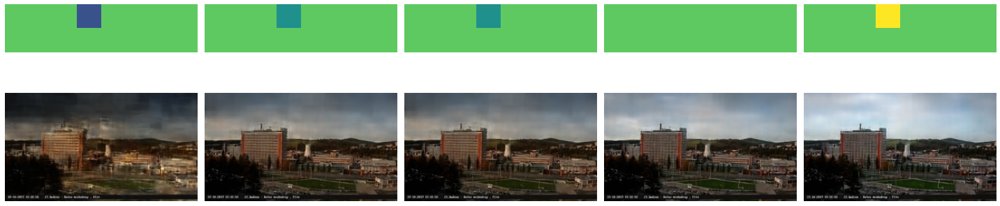
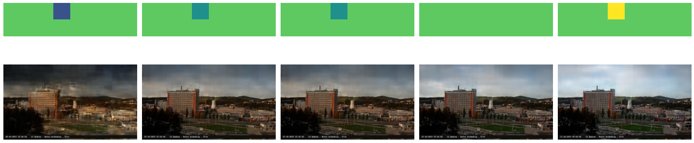

Webcam VAE
Projekt předmětu NI-CCC v letním semestru 2020-2021
Team
Co?
Na internetu je strašně moc otevřených webkamer - ať už do ulic, na něčí zahradu, od ptačího hnízda, nebo třeba i ze zadu mazací tramvaje v Praze. To tvoří obrovské množství vizuálních dat, které jsou málo využívané. Cílem je natrénovat VAE ("variační autoenkodér") zapomocí strojového učení a tím umožnit klasifikaci a vizualizace za pomocí těhto dat.
Ukázky kamer
Proof of concept
Natrénovali jsme VAE na datech z webkamery ve Zlíně a získali latentní prostor v rámci kterého umíme např. rozsvítit světla na budově či plynule přejít z noci na den.
 
